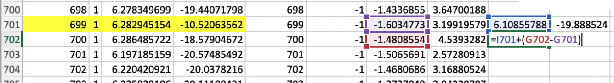

ズレ補正、Image Registration
アプリケーション
- ImageJ/FIJI, plug-in "Image Stabilizer"と、"Image Stabilizer Log Applier"
https://imagej.net/Image_Stabilizer
- MS Excel、または、Apple Numbers
ImageJ/FIJIに上記リンクを参考に、プラグインをインストールします。Macの場合、Finderで操作します。/Application/Fiji.appの上で、右クリック、Show packege contents。/pluginsのなかにダウンロードしたファイルをドラッグ・アンド・ドロップし、ImageJ/FIJIを再起動、です。
数あるRegistrationツールの中から、Image Stabilizerをえらびました。移動させた距離（ピクセル）をLogファイルとして記録シてくれるのがポイントです。万が一、ズレ補正に失敗する箇所があっても、Logファイルの数値を修正することで、ズレ補正を成功に導けます。さらに、Logファイルの数値を倍加することで、大きな画像にもズレ補正をかけられます。
手順
- 連続画像をひらく フォルダごとImageJのバーにドラッグアンドドロップ。搭載メモリと相談ですが、おおかた1000x1000x10000枚の画像が限度です。メモリに展開してください。かつてはVirtual Stackでもできましたが、ImageJのバージョンアップ後、逐次保存ができなくなりました。
Plug-ins,Image Stabilizerこのとき一番前の画像を開いておけば、前から順にに補正をかけます。一番後ろの画像を開いておけば、後ろから補正します。Logファイルを生成するに必ずチェックをいれます。もし、メモリが潤沢なら、結果を別ファイルで表示するにチェックしたほうがよく、補正の成否確認に便利です。- パラパラとめくってみて、成功していれば、ラッキー。完了です。
- 保存は、
Save as,Image Sequense...元のファイル名を使うに、チェック。 - もし失敗箇所があれば、メモをとります。
Logファイルを修正する
失敗してもあきらめず、Logファイルをエクセルなどで修正します。補正失敗には2種類あって、一枚だけが飛び出ている場合と、1箇所ずれるとそれ以降が移動しっぱなしというのがあります。下の例では、前から補正の699、742枚目で一枚だけ飛び出ています。また、前から補正の762、後ろから補正の318で、移動が起こっています。Logファイルの補正では、前からLogの正しいところと、後ろからLogの正しいところを合体させれば、全体が正しいLogファイルを作れます。Logファイルには、4列の数値があって、
- 画像の順番、
- 前に進んだか後に進んだか（1、-1）、
- ヨコの補正距離、
- タテの補正距離
これらが収録されています。補正後の画像で確認しながら、失敗箇所をメモします。
 例、前から補正と後ろから補正の結果
例、前から補正と後ろから補正の結果
- Excelで、Sheet1に、
File>Import、Text file、ImportボタンファイルをえらんでGet Data - Text import wizard,
Delimitedにチェック、File originは、MacならMacintosh。Nextボタン Commmaにチェック、Finishボタン- Existing sheet, sheet1,
OKボタン - Excelで、Sheet2を用意し、上記と同様に、後ろからLogをsheet2に開きます。
- 後ろからLogは降順になっているので、昇順になおします。4列を選んでから、
タブData,Sort, Sort byColumn A, OrderA-Z,OKボタン - 後ろからLog（Sheet2）を、前からLog（Sheet1）の隣にコピペ。
- 失敗位置を修正する
- 失敗箇所を、色を違えるなどして、マークする。
- 一枚だけの場合、そこだけ、比較して、差分を加算
- 1箇所以降移動の場合、まず、ズレはじめの箇所を補正。つぎにそこ以降を補正します。
 699以降で移動している例（上の図とは異なります） まず新しい699のヨコ補正距離を緑枠の位置に計算している
699以降で移動している例（上の図とは異なります） まず新しい699のヨコ補正距離を緑枠の位置に計算している
 次にタテ補正距離も計算し、以降の移動をただす
- 修正がすんだら、元のLogファイルと同様の「4列×タイトル行＋枚数だけの行数」にします。計算結果の数値をコピペする作業です。Excelなら、
Edit,Paste Special...,Valuesチェック,OKボタンを使います。 - ここで、いったん、xlsx形式で保存しておきます。
- 次に、別名保存で、csvを作ります。
File,Save as, File Format:csvCSVファイルは、Sheetごとにしか保存できません。 - Finderで、保存したcsvファイル名の拡張子を書き換えます。
.csvから.logへ。メッセージにuse log。 - ファイルをテキストエディタで開く。
右クリック,Open with,TextEdit.app -
余計な文字を削除する。1行目の「"」6個、「,」3個、2行目の「,」3個を削除。（この作業を忘れると、のちのLog Applierで認識してくれません。）
 余計な文字を削除
余計な文字を削除 -
保存。これで修正Logファイルの完成です。
- ImageJ/FIJI,
Plug-ins,Image Stabilizer Log Applierにかけます。連続画像と、Logファイルを開いておいてから、Applierを実行します。（注、最新FIJIには、開くときのバグがあります。対策は下記）
Logファイルを倍加する
例えば、500x500でimage Stabilizer（ズレ補正）に成功すれば、Logファイルの数値ぜんぶを2倍にして、1000x1000の画像に、Image Stabilizer Log Applierをあてられます。 ブロック周囲形状をズレ補正の基準にしているので、ズレ補正は、広く写った画像にしか適用できません。試料のごく一部を高精細画像でズレ補正したいときの工夫です。 小さい画像でつくったLogファイルを、Excelでいじって、倍加Logファイルを作ります。
Tips
おそい
- はじめは小さく縮小した連続画像からやってみて、Logファイルをゲットします。Logファイルさえ入手できれば、数値を倍加するなどして、大きなままの連続画像に対してLog Applierでズレ補正できます。
- 画像が大きすぎませんか。はじめは小さく縮小した連続画像からやってみて、Logファイルをゲットします。Logファイルさえ入手できれば、数値を倍加するなどして、大きなままの連続画像に対してLog Applierでズレ補正できます。 具体的には、最初は500x500程度に縮小したものからやってみます。つぎに1000x1000など大きな画像に2倍LogをLog Appiler!
- 画像のデータ量を少なくする、基本技。縮小やクロップで少なくしています。クロップは、RAW−JPEG変換時またはPhotoshop, ImageJで縮小するときにやっていて、ブロック面と周辺少しが残る程度にしています。
- 画像データ量を少なくする、別の技。奇数番号だけ、偶数番号だけにしたこともあります。これは、切削を薄くしすぎた、過剰だったときに行ないます。Macの場合、まず、Finderを縦に細長く表示させ、アイコン表示にします。2列に表示されれば、マウスで片方の列だけ選択して、新しいフォルダにまとめます。
うまくいかない
一発でうまくいくときから、まれに2日間ほど悩むときもあります。しかし、これまで200サンプル以上のCoMBI撮影を経験し、ズレ補正に失敗したことはありません。きっとどうにかできるはずです。うまくいったときの最速記録は、8サンプルのCoMBI撮影からズレ補正までを丸2日間で成功させたというものです。 * Image Stabilizerを最初の画像からやってみてだめなら、後ろからやってみる。 * Image StabilizerのLogを修正する。
これらでできない場合は： * ブロックの外周で補正がかかります。画像にブロック外周が含まれていますか？クロップしすぎていませんか。 * ゴミがかかっている画像で、ズレ補正が失敗することがあります。ゴミをかぶった画像はすてて、隣の画像で補完してください。隣を複製し、ファイル名をかえます。実験ノートに記録をのこします。 * 撮影に失敗した箇所で、ズレ補正が失敗することがあります。たとえば撮影ポイントを通り過ぎてしまった一コマなど。手動クリオスタットの場合にときどきあります。ひどい場合は、捨てて隣で補完します。惜しいときは、クロップ（RAW-JPEG変換時か、PhotoshopやImageJでやったか）するときに、手動でクロップ位置を修正します。
どうしてもだめ
- どうしてもダメなら、ご連絡ください。
新版ImageJ/FIJIのバグ、Image Stabilizer Log Applierができない？
ImageJ/FIJIを最新にアップデートしたら、Image Stabilizer Log ApplierでLogファイルをひらくと、改行がなくなってしまい、使えなくなります。いつもどおり、Image Stabilizerはできるし、Logファイルも正しく生成はされます。一旦保存したLogファイルを再び開くときだけのバグです。改行コードの扱いに関するようにもみえるし、FIJIがテキストファイルを認識するとき、利用するウィンドウ種の選択がおかしくなったようにもみえます。FIJIのサイトによると、8月に大型アップデートを施したそうです。2020年8月Mac OS 10.15.6、および2020年10月Windows10で検証しました。いまのところ、以下の対策いずれかで使えるようになります。
対策1、テキストとしてコピペ
- Logファイルをテキストとして開く。Macの場合、Finderで保存したLogファイル上で右クリック、アプリ指定で開く Open with... TextEdit.app。Windowsの場合、メモ帳で開く。
- FIJIで、新規のテキストウィンドウを作る。
Plug-ins,New,Text Window...(width, heightはなんでもよい) - 上記1で開いたLog (Mac: TextEdit.app、Win: メモ帳）をすべて、コピーする。そして、上記2で作ったFIJIの新規Text Windowへ、すべてペーストする。これで、Logファイル が正常に開いた状態になる。（以降は通常のImage Stabilizer Log Applierの手順です。）
- ImageJ/FIJIで、連続画像を開く
- ImageJ/FIJI Plug-ins > Image Stabilizer Log Applier
対策2、旧版のImageJ/FIJIを使う
下記リンク、過去のバージョンリスト(2019.10.27-2020.8.10)には20種のバージョンがあます。 https://downloads.imagej.net/fiji/archive/ * FIJI 20200721-1931 Logファイルは正常に開く。これより前の古いバージョンを使ってください。 * FIJI 20200802-0255 Logファイルは直接使えない。もし、これより新しいバージョンを使わなければ行けない場合は、上記の対策1を行ってください。